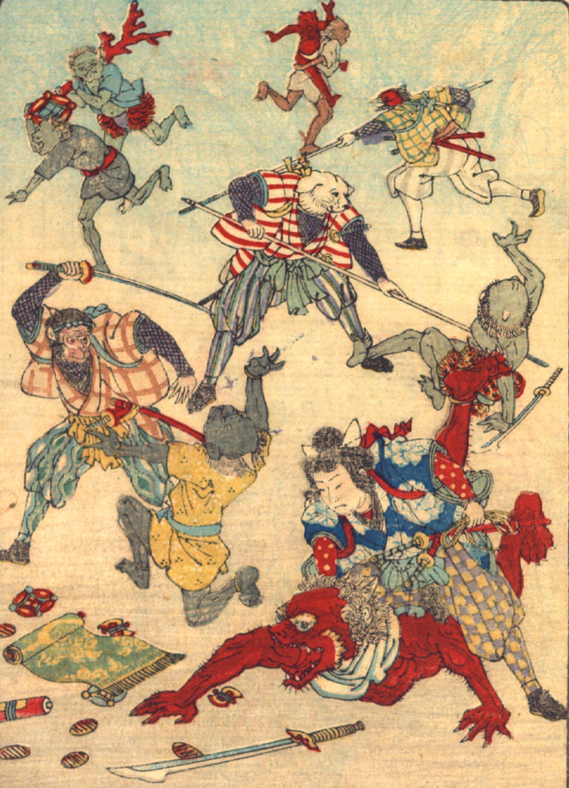

桃太郎一行が鬼たちに襲いかかっている。桃太郎は赤い鬼の背に乗りかかり、猿は刀で青い鬼に切りつけている。犬と雉は槍で鬼を追っている。宝物が地面に散らばり、画面の奥には宝物を持って逃げようとする鬼の姿が描かれている。
著作者：David Thompson／出典：親書誌：U426_nichibunken_0116：Momotaro／日付：2006／資源識別子：U426_nichibunken_0116_0004_0000
Copyright (c)2010- International Research Center for Japanese Studies, Kyoto, Japan. All rights reserved.